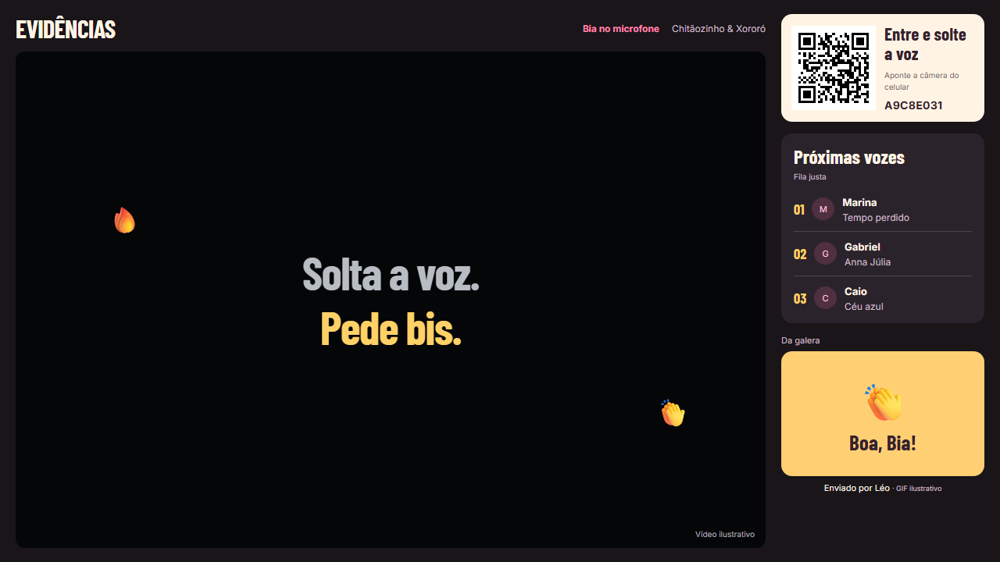

No palco · só apresentação

CarvãoCremeRosaÂmbar
Do A: letras marcantes, vídeo maior, identificação compacta no topo. Fila na direita, acima dos GIFs.
Do B: painel claro da música, pedido integrado e controles arredondados.
Exemplos com dados fictícios. Player e GIF ilustrativos; QR sem vínculo com uma sala. Ações simuladas localmente. Nenhuma mudança aplicada à aplicação.